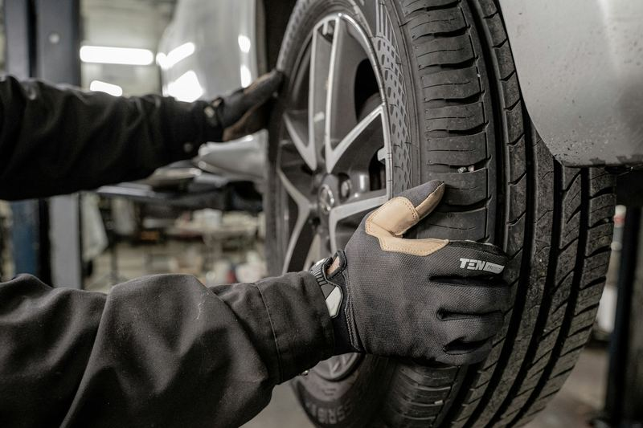
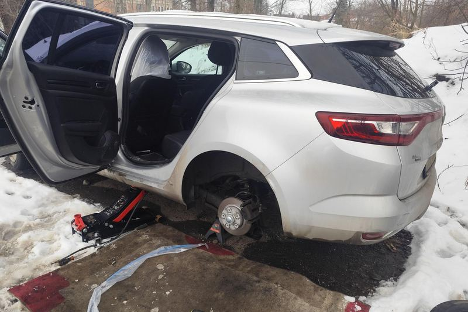
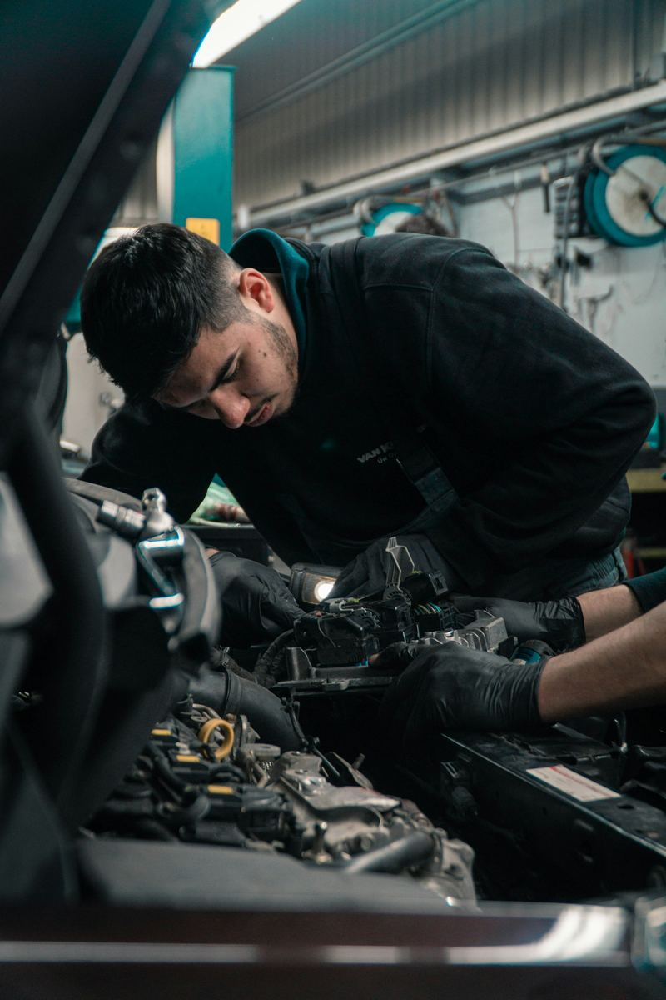
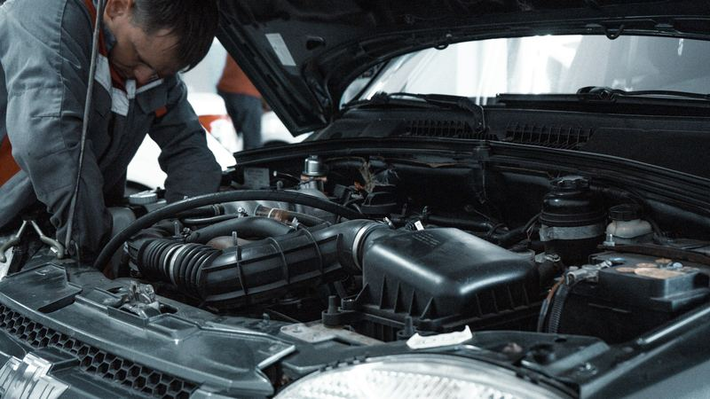

Brzdy
Destičky, kotouče, kapalina. Když pískají nebo drhnou.
Mobilní autoservis Schaffer pro Havířov, Frýdek-Místek a Ostravu. Brzdy, tlumiče, stahovačky oken, elektrika. U mě nečekáte dva týdny, akutní věci řeším hned.

Klepněte a pošlete mi zprávu na WhatsApp. Když zrovna ležím pod autem a nezvedám telefon, zprávu si přečtu hned, jak vylezu.
Na parkovišti, u domu nebo v práci.

Destičky, kotouče, kapalina. Když pískají nebo drhnou.

Výměna tlumičů a dílů podvozku.

Okno nejde nahoru ani dolů? Opravím ho na místě.

Opravy elektrické kabeláže, když něco přestane fungovat.
„Měla jsem poruchu na autě a v autě s sebou dceru. Zavolala jsem a pan Schaffer mě uklidnil, že co nejdříve dorazí. Během 30 minut byl v Ostravě.“
zákaznice na Firmy.cz
„Komunikativní a milý mladík, opravdu všestranný odborník. Vím, na koho se příště zase obrátit.“
zákaznice na Firmy.cz